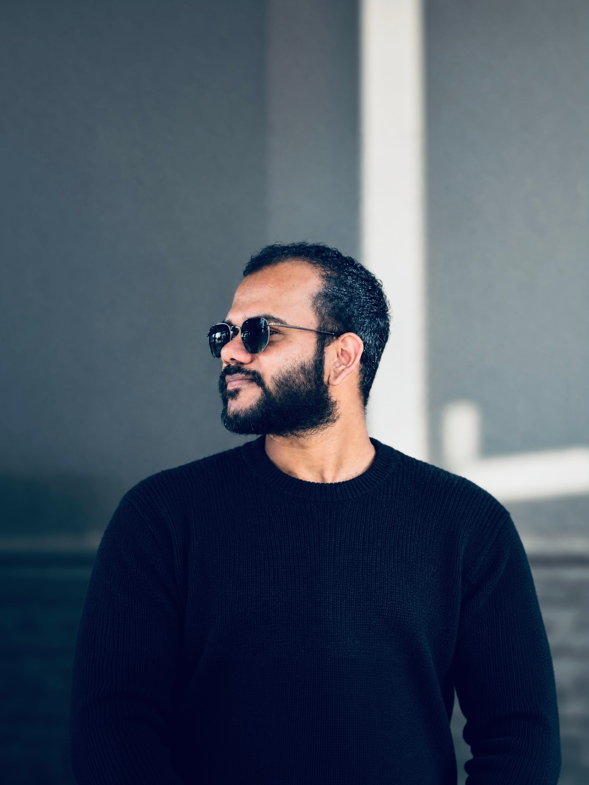
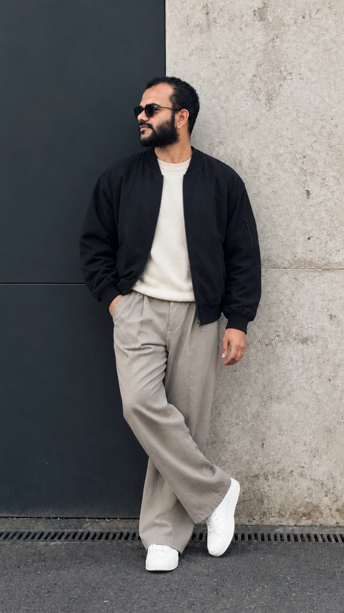

Amal Martin.
A UI/UX designerwriterpoet
based in Bangalore.
Designing digital experiences with a focus on how people think, behave, and interact with technology. My work spans UI/UX, product design, and brand identity, while my curiosity extends into psychology, philosophy, and writing.
- Projects built from scratch
- 35+
- Years in design
- 4+
- PhD scholar · Computer Science
- HCI.

In a world where AI lets everyone build, what makes a product stand apart is creativity — the unique magic only a human can bring.
Tools can generate. Creative thinking decides what’s worth making — the idea, the feeling, the small human detail nobody asked for.
Built from scratch. Branded end to end. Every project with its own design system.
Projects
35+
Built from scratch — from first sketch to shipped product.
Colors
Palettes with contrast and accessibility rules built in.
Typography
Type scales, pairings and hierarchy.
Design systems
Components, tokens and documentation.
Brand identity
Logo, voice and guidelines.
Every project
100%
ships with its own design system and brand.
ERP systems
2
Two of the 35+ are ERPs.
End to end
Where I can help — on contract or freelance.

I design products the way I write poems: with restraint, rhythm, and room to breathe.
I’m a UI/UX designer, writer and poet based in Bangalore. I shape interfaces, user flows and brand systems — and alongside them I write about love, loss, wonder and the small moments that turn out to be the large ones.
Both crafts ask the same question: what does this person need to feel, and what can I remove so they feel it sooner? Design taught me structure. Writing taught me empathy. Poetry taught me to leave the right things unsaid.
I’m a PhD scholar in Computer Science, researching Human–Computer Interaction — where user psychology, cognitive science and technology come together. It helps me understand users more deeply, and it drives the way I design.
At Kristu Jayanti Software Development Centre I’ve built 35+ projects from the ground up, creating extensive design systems and branding for every one of them. Alongside, I take on select freelance work in UI/UX and brand.
01
Design thinking
Research-led UI/UX — user flows, prototypes, polished interfaces and design systems built in Figma.
02
HCI research
User psychology, cognitive science and technology meeting — the lens that shapes how I understand people and design for them.
03
Writing & poetry
A passion, not a job — essays and verse on love, grief, wonder and the questions without tidy answers.
- Based in
- Bangalore, India
- Currently
- UI/UX Designer, Kristu Jayanti Software Development Centre
- Also
- PhD Scholar in Computer Science · Writer · Poet
- Research
- Human–Computer Interaction — user psychology, cognitive science & technology
- Toolkit
- FigmaHCI ResearchDesign SystemsBrandingWireframingPrototypingUX ResearchUser FlowsGraphic DesignAdobe PhotoshopColor Theory
Where I’ve been designing — and everything around it.
-
May 2024 — Present
Bengaluru, Karnataka
Current
Kristu Jayanti Software Development Centre
Full-time
Built 35+ projects from scratch — from first sketch to shipped product — creating extensive design systems and branding for every one of them.
0 → 1 Product DesignDesign SystemsBrandingUI/UX-
UI/UX Designer
Jul 2024 — Present
-
Software Engineer Intern
May 2024 — Jul 2024 · On-site
-
-
Nov 2025 — Present
Hybrid
Creative Designer
IVY Cultured Living Pvt. Ltd · Freelance
UI/UXGraphic Design -
Jan 2024 — Present
UI/UX Consultant
CUFA · Freelance
UI/UX -
Jan 2023 — Present
UI/UX Designer
Freelance
WireframingUser Interface DesignUX ResearchUser ExperienceFigmaPrototypingUser ResearchUser Flows -
Jul 2022 — Present
Bengaluru · Remote
Graphic Designer
Freelance
Graphic DesignGraphic Design PrinciplesAdobe PhotoshopColor TheoryCommunicationAttention to Detail -
Jun 2023 — Dec 2024
India
HigherEd for All
Freelance
-
Content Writer
Jun 2023 — Dec 2024
-
Creative Designer
Jun 2023 — Dec 2024
Attention to DetailMultitasking -
-
Jan 2024 — May 2024
QA Tester & UI/UX Designer
Encryptus™ · Internship
UI/UX DesignUX ResearchFigmaTestingTest AutomationTest PlanningTest CasesTest Management -
Mar 2023 — Jun 2023
Jr. Software Developer
Rats Technologies
-
Oct 2020 — Jun 2022
Malur, Karnataka · On-site
IT Support & Creative Designer
Christ International School
Graphic DesignImage EditingVideo EditingVideographyPhotographyERP SoftwareWireless NetworkingCommunicationMultitasking
Learning how machines work — and how people use them.
PhD scholar · Ongoing
Doctor of Philosophy (PhD), Computer Science
Kristu Jayanti University
Research in Human–Computer Interaction — where user psychology, cognitive science and technology come together to shape how people use what we build.
2026
Jan 2026 — Present
-
Aug 2022 — Jun 2024
Master’s degree, Computer Applications
Kristu Jayanti University
Figma -
Jul 2017 — Sep 2020
Bachelor of Computer Applications
Christ College of Science and Management
-
Jul 2015 — May 2017
PUC
Krupanidhi Residential PU College
-
Jun 2009 — May 2015
Christ International School
-
Jun 2005 — Mar 2009
Carmel Convent High School
Six languages to say hello in.
English
Hello
hi there
Malayalam
Mother tongueനമസ്കാരം
Namaskaram
Hindi
नमस्ते
Namaste
Kannada
ನಮಸ್ಕಾರ
Namaskara
Tamil
வணக்கம்
Vanakkam
Telugu
నమస్కారం
Namaskaram
Design help, on contract or freelance terms.
Need a brand from zero, a research sprint, a fresh pair of eyes on what you’ve already built, or a voice on stage? Let’s scope it together.
-
#01
Brand Colors
Considered palettes with clear rules for contrast, usage and accessibility — built to hold up across screens and print.
-
#02
Brand Identity
Logo, typography and visual language that make a brand instantly recognisable — plus the guidelines that keep it consistent.
-
#03
User Research
Interviews, usability tests and synthesis — grounded in HCI and user psychology — that turn what people say and do into clear design decisions.
-
#04
Market Research
Competitor and landscape analysis that shows where your product can stand apart.
-
#05
UX Design
User flows, information architecture, wireframes and prototypes — structure before surface.
-
#06
UI Design
Polished, accessible interfaces and scalable design systems, ready for a smooth hand-off to developers.
-
#07
UI/UX Audit
A clear review of an existing product — usability issues, inconsistencies and quick wins, prioritised.
-
#08
Consultant
On-call design guidance for teams — from product direction and process to hand-off.
-
#09
Talks
Talks and workshops on design, creative practice and writing — for teams, campuses and events.
Words for the things that don’t have clean answers.
I write for the love of it. Love, loss, grief, wonder, philosophy, psychology, nature, romance — the small moments that turn out to be the large ones.
Available for freelance & contract
Let’s talk.
Have a product to design, a brand to shape, or a story to tell? Pick what you need below and I’ll draft the email for you.
What are we making?
Pick what you need. I’ll write the email — you just hit send.
I need
Working together as
Your draft
Nothing is sent from this page — it opens your email app with the draft ready.